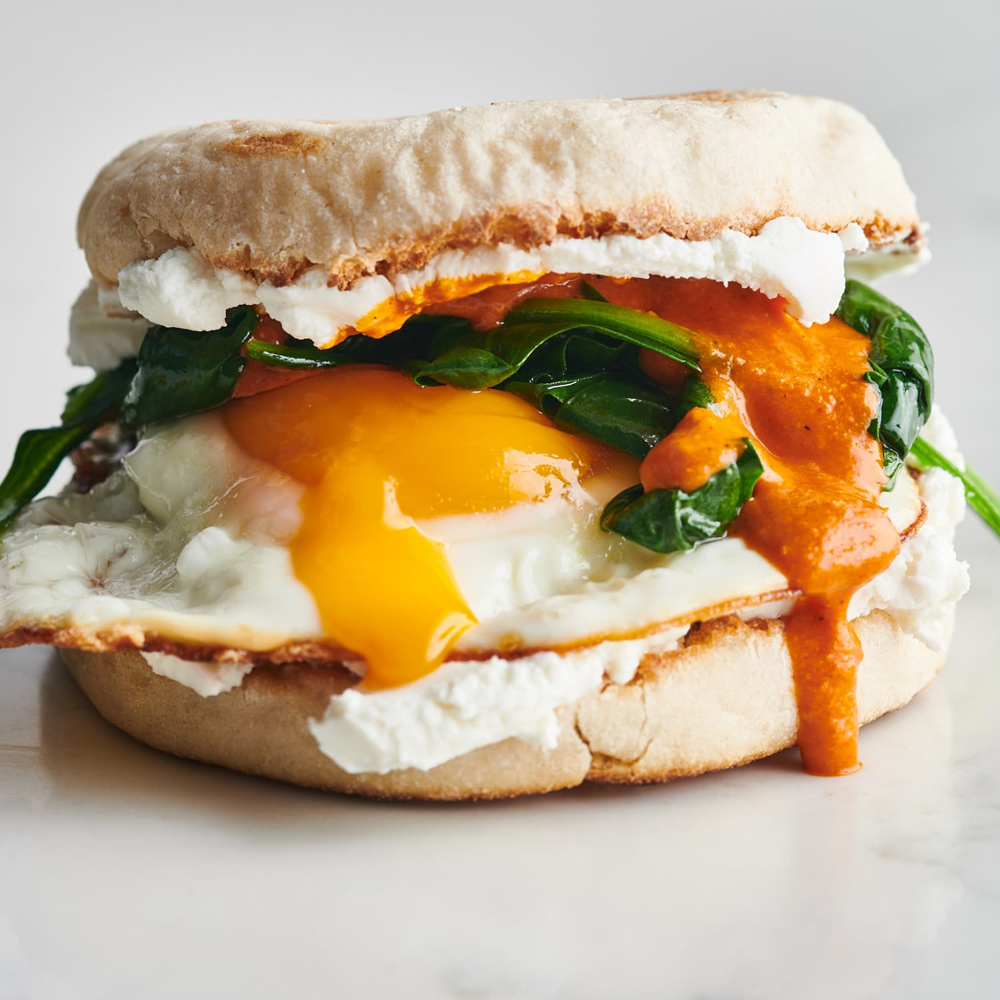

Vegetarian Breakfast Sandwich

Description
Delicious veggie-filled breakfast sandwiches. I make large batches of these and keep them in the freezer. Take one out the night before and let defrost in fridge. In the morning, just nuke and you have a yummy hot breakfast.
Ingredients
- olive oil cooking spray
- 4 vegetarian sausage patties
- 4 ounces fresh mushrooms, chopped
- ¾ cup finely chopped fresh spinach
- 2 cloves garlic, minced
- ½ teaspoon Italian seasoning
- 1 pinch chili powder, or to taste
- 1 pinch cayenne pepper, or to taste
- salt and ground black pepper to taste
- 1 cup egg whites
- ½ cup low-fat cream cheese
- English muffins, split and toasted
Steps
- Spray a nonstick skillet with cooking spray and place over medium heat. Cook patties until heated through, 4 to 5 minutes per side. Transfer to a plate.
- Spray skillet with more cooking spray. Saute mushrooms over medium heat until tender, about 5 minutes. Add spinach, garlic, Italian seasoning, chili powder, cayenne, salt, and pepper; stir until mixed.
- Pour in egg whites and stir lightly until combined. Cook until starting to set, 2 to 3 minutes. Lift edges and let uncooked egg flow underneath. Repeat until completely set, about 5 minutes. Remove from heat and cut into 4 wedges.
- Spread cream cheese over English muffin halves. Sandwich a sausage patty and wedge of egg between each English muffin.
Nutrition Facts
Per Serving: 346 calories; protein 22.7g; carbohydrates 33.6g; fat 13.8g; cholesterol 17.9mg; sodium 772.4mg.
Return to Main Page